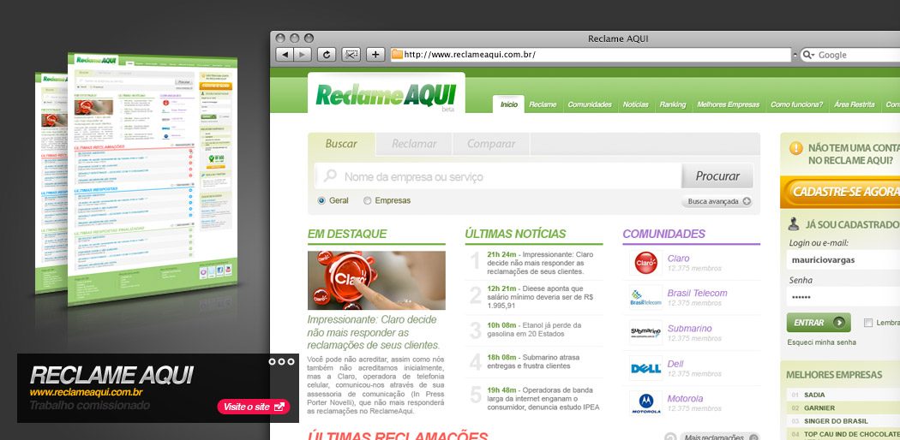
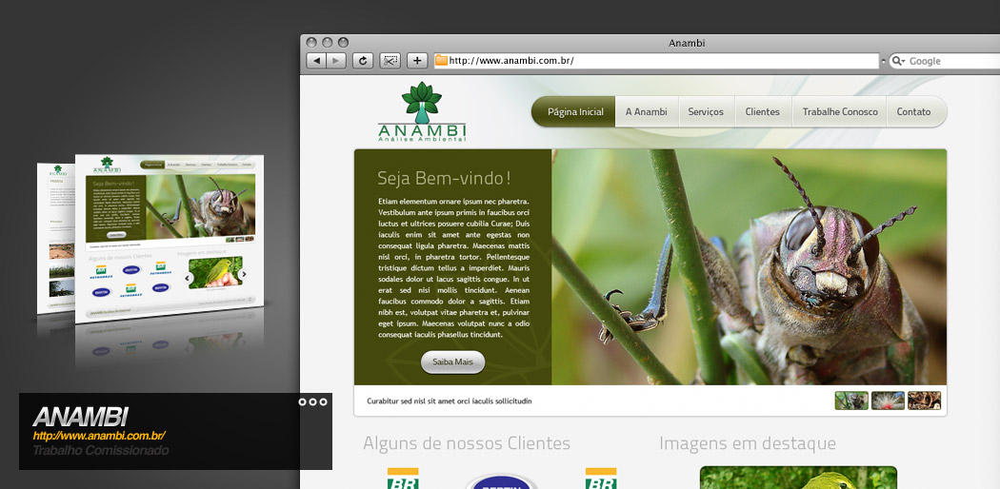
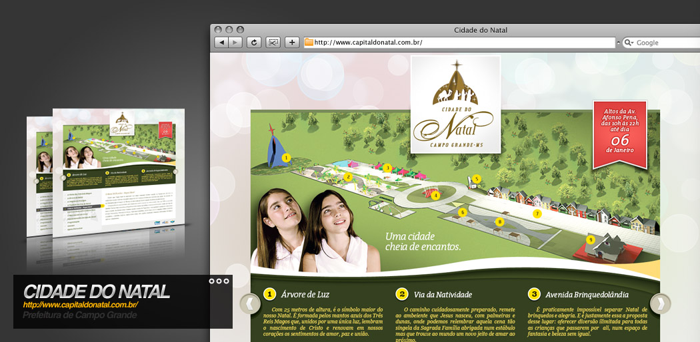
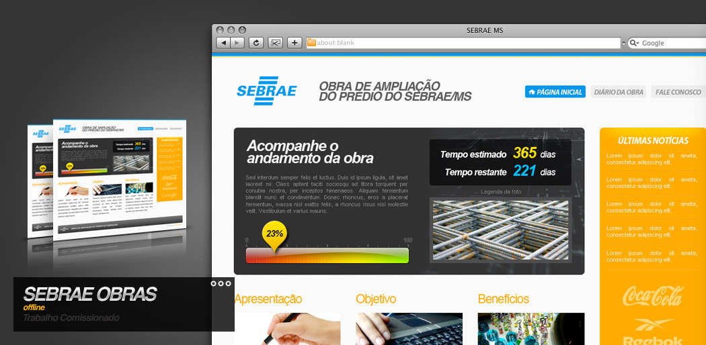
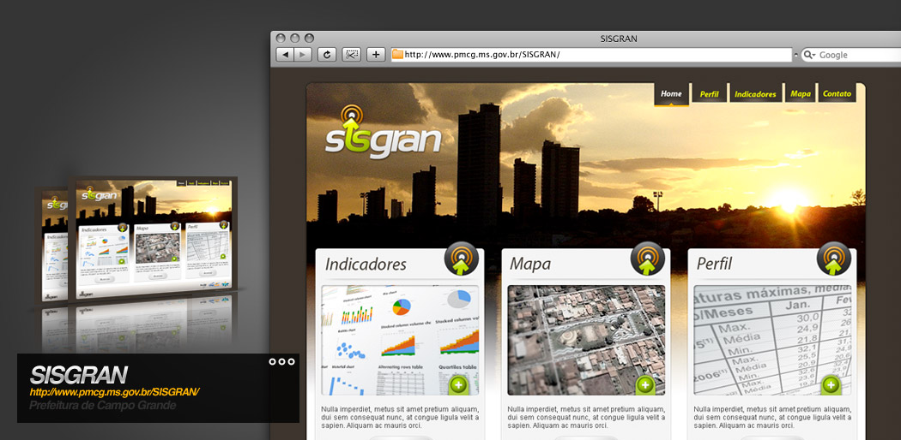

Ney Ricardo - Web Designer e Designer Gráfico
Olá. Meu nome é Ney Ricardo, sou Designer Gráfico e Web Designer. Aqui reuni meus principais trabalhos. Caso sinta interesse em trabalhar comigo por favor entre em contato. Fique à vontade!




